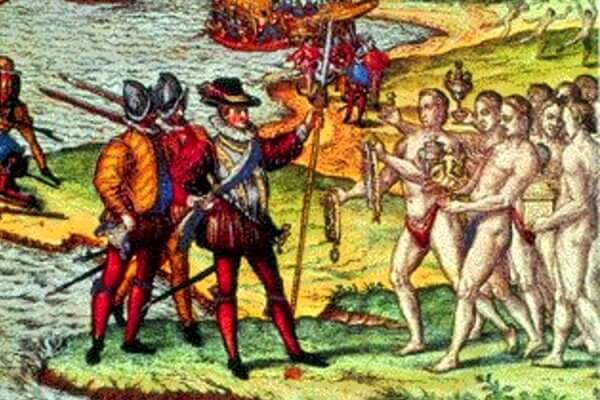
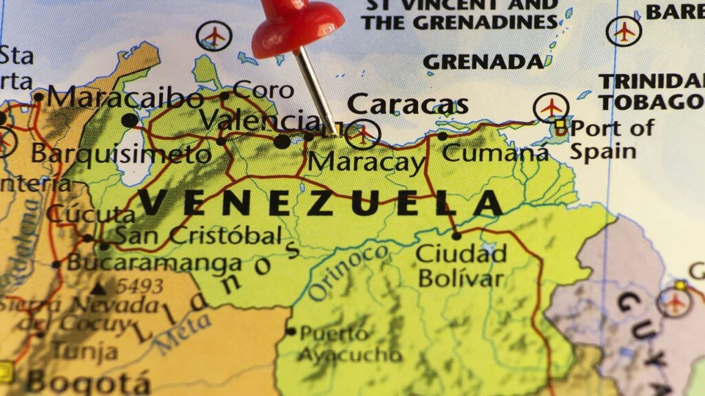
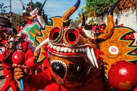

Historia
Venezuela, oficialmente conocida como la República Bolivariana de Venezuela, es un país en la costa norte de América del Sur. Tiene una rica historia que se remonta a miles de años, con civilizaciones indígenas que habitaban la región mucho antes de la llegada de los europeos.

Geografía
Venezuela cuenta con una geografía diversa que incluye montañas, llanuras, selvas y costas. Es hogar del Salto Ángel, la cascada más alta del mundo, y el delta del Orinoco, uno de los más grandes del mundo.

Cultura
La cultura venezolana es una mezcla vibrante de influencias indígenas, africanas y europeas. Es conocida por su música, especialmente el joropo, y su gastronomía única, que incluye platos como arepas, pabellón criollo y hallacas.
